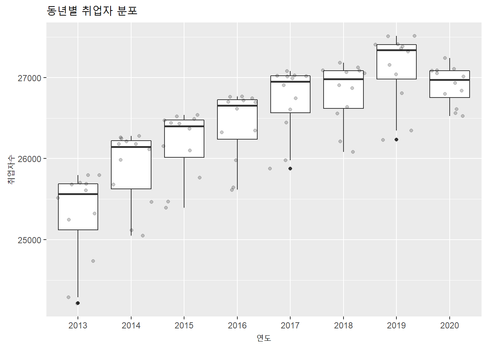

4.11 동월별, 동분기별, 동년별 Plot
앞선 plot에서처럼 시계열 데이터는 대부분 선 plot으로 그려지는 경우가 많다. 하지만 동년, 동월, 동분기의 데이터를 전체적으로 확인해야 할 떄가 있다. 이 plot은 모든 시계열 객체에서 그릴수는 없다. ggplot()으로 데이터프레임이 가장 구현하기가 쉬운데 일부 시계열 패키지에서 제공하는 계절성 plot 함수를 사용할 수도 있다.
이 절에서는 주로 box plot을 활용하여 정보를 표현하도록 하겠다.
- 데이터프레임 :
group_by()
데이터프레임을 사용한 동월, 동분기별, 동년별 plot은 우선 데이터를 적절히 grouping 해야한다.
앞의 예제에서는 월별 데이터로 grouping 하기를 원하면 더 큰 시간인 년도도 같이 grouping해서 전체적인 시간적 흐름을 놓치지 않도록 유지하였다. 하지만 매 1월 판매량 등과 같이 시간적 흐름보다는 시간적 특성만을 원할 경우는 grouping할 때 원하는 해당 정보에 대해서만 grouping 함으로써 원하는 정보를 얻을 수 있다.
employees %>%
mutate(year = lubridate::year(employees$time)) %>%
ggplot(aes(as.factor(year), total)) +
geom_boxplot() +
geom_jitter(alpha = 0.2) +
labs(title = '동년별 취업자 분포', x = '연도', y = '취업자수')
employees %>%
mutate(month = lubridate::month(employees$time)) %>%
ggplot(aes(as.factor(month), total)) +
geom_boxplot() +
geom_jitter(alpha = 0.2) +
labs(title = '동월별 취업자 분포', x = '월', y = '취업자수')
employees %>%
mutate(quarter = lubridate::quarter(employees$time)) %>%
ggplot(aes(as.factor(quarter), total)) +
geom_boxplot() +
geom_jitter(alpha = 0.2) +
labs(title = '동분기별 취업자 분포', x = '분기', y = '취업자수')
covid19 %>%
mutate(month = lubridate::month(covid19$date)) %>%
ggplot(aes(as.factor(month), `0-9세`)) +
geom_boxplot() +
geom_jitter(alpha = 0.2) +
labs(title = '동월별 확진자 분포', x = '연도', y = '확진자수')covid19 %>%
mutate(wday = lubridate::wday(covid19$date, label = TRUE)) %>%
ggplot(aes(as.factor(wday), `50-59세`)) +
geom_boxplot() +
geom_jitter(alpha = 0.2) +
labs(title = '동요일별 확진자 분포', x = '연도', y = '확진자수')
- 데이터프레임 :
plot_seasonal_diagnostics()
데이터프레임 객체에서 계절성을 ploting 하기 위해 앞의 예제에서는 계절주기로 grouping 한 컬럼을 활용하였다. 하지만 계절성을 알고 있는 경우는 쉽게 구할수 있지만 계절성을 모르는 경우는 여러 plot을 확인해야 한다.
이런 경우 사용할 수 있는 함수가 timetk 패키지의 plot_seasonal_diagnostics() 이다. 이 함수는 주어진 시계열 데이터에 가능한 모든 동월, 동분기, 동요일 등의 plot을 동시에 생성해준다. plot_ly와 ggplot2를 기본으로 작성된 plot이기 때문에 가장 큰 장점이 반응형(interactive) plot이 생성된다.
employees %>%
timetk::plot_seasonal_diagnostics(.date_var = time, .value = total, .title = '전체 취업자의 주기별 Plot')covid19 %>%
timetk::plot_seasonal_diagnostics(.date_var = date, .value = `0-9세`, .title = '코로나 확진자(0-9세)의 주기별 Plot')